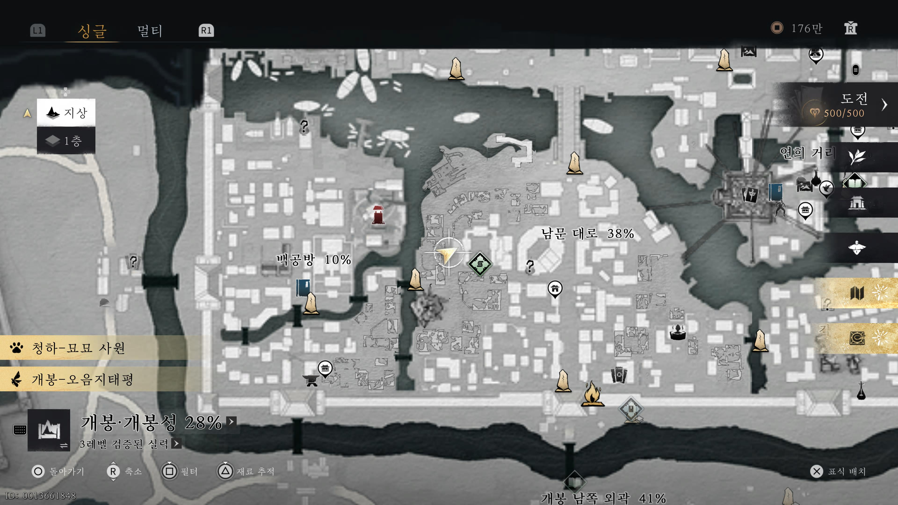

견평안의 부탁
선행 조건을 만족했다면 아래 위치로 이동하세요.
견평안이라는 NPC가 기다리고 있으며, 대화를 걸면 아픈 몸을 치료하기 위해 약첩이 필요하다고 합니다.


견평안을 위한 약 구하기
이 퀘스트는 [임무 > 잔편]에 있는 '덧없는 인생'을 어느 정도 진행해야 등장합니다.
(작성자의 경우: 2권 진행 중 정연에게 잎사귀를 돌려준 후 NPC가 등장했습니다.)
아픈 견평안을 위해 약방문을 받아오는 간단한 의뢰입니다.
선행 조건을 만족했다면 아래 위치로 이동하세요.
견평안이라는 NPC가 기다리고 있으며, 대화를 걸면 아픈 몸을 치료하기 위해 약첩이 필요하다고 합니다.
견평안과 대화 후, 아래 위치로 이동하여 부온서라는 NPC를 찾으세요.
그와 대화하면 약방문을 받을 수 있습니다.
받은 약방문을 가지고 다시 견평안에게 돌아가 전달하면
퀘스트는 완료됩니다.